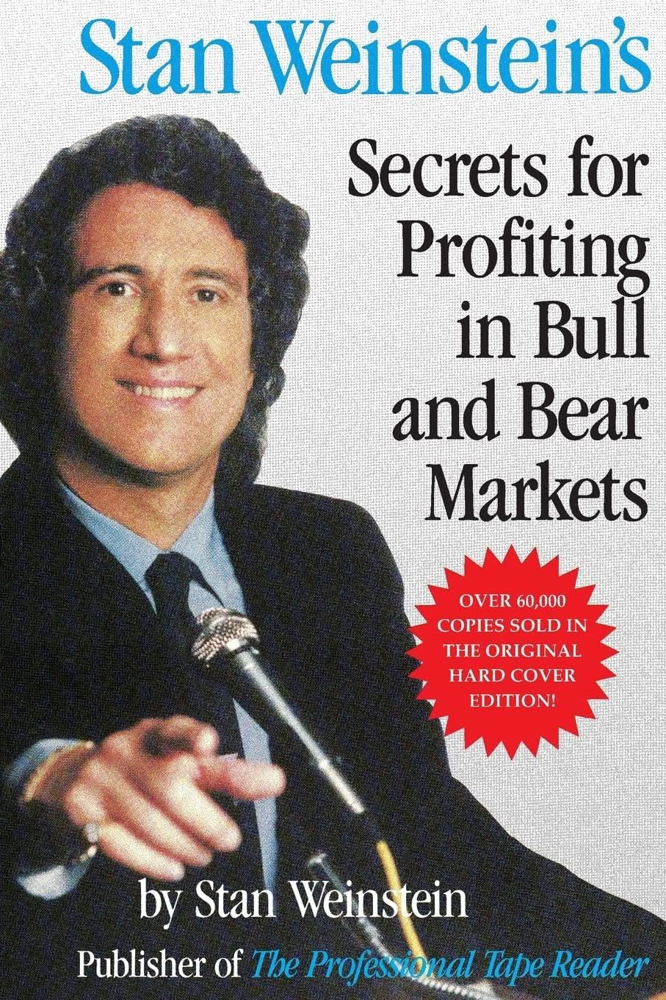

<!doctype html>
<html lang="fr" data-resolution="portrait">
  <head>
    <meta charset="UTF-8" />
    <meta name="viewport" content="width=1080, height=1920" />
    <script src="assets/gsap.min.js"></script>
    <script src="assets/nflx.js"></script>
    <script src="assets/logos.js"></script>
    <script src="assets/vo-words.js"></script>
    <style>
      /* Reel « Les 4 phases de Stan Weinstein », expliquées avec Netflix (58 s), trame FinanceData (styles/financedata/TRAME.md).
         Une seule couleur par écran pour le point clé, vraies images, cartes blanches à angles droits,
         contenu réduit à 82 % pour la zone sûre Instagram / TikTok, sous-titres 3 mots max calés sur la voix. */
      @font-face { font-family: "Display"; src: url("assets/fonts/inter-display-latin-var.woff2"); font-weight: 100 900; }
      * { margin: 0; padding: 0; box-sizing: border-box; }
      html, body { width: 1080px; height: 1920px; overflow: hidden; background: #000b22; }
      #root { position: relative; width: 1080px; height: 1920px; overflow: hidden; background: #000b22; color: #0a105e; font-family: "Display", sans-serif; font-variation-settings: "opsz" 32; -webkit-font-smoothing: antialiased; }
      .a { position: absolute; }
      .sc { position: absolute; left: 0; top: 0; width: 1080px; height: 1920px; opacity: 0; }
      .full { position: absolute; left: 0; top: 0; width: 1080px; height: 1920px; opacity: 0; }
      svg { position: absolute; overflow: visible; }
      svg text { font-family: "Display"; font-variation-settings: "opsz" 32; font-feature-settings: "tnum" 1; letter-spacing: -1px; }
      .cap { position: absolute; left: 0; right: 0; top: 1360px; text-align: center; opacity: 0; }
      .cap span { display: inline-block; font-weight: 700; font-size: 66px; letter-spacing: -.055em; word-spacing: .02em; color: #0a105e; }
      .cap.w span { color: #fff; text-shadow: 0 2px 4px rgba(0,0,0,.35), 0 6px 24px rgba(0,0,0,.45); }
      .ttl { position: absolute; left: 96px; top: 286px; font-weight: 700; font-size: 72px; letter-spacing: -.055em; line-height: 1; }
      .src { position: absolute; left: 96px; font-size: 28px; font-weight: 500; color: #6b7290; letter-spacing: -.02em; }
      .card { position: absolute; background: #fff; border-radius: 4px; box-shadow: 0 18px 50px rgba(0,11,34,.28); }
      .tile { position: absolute; left: 96px; width: 888px; height: 300px; border-radius: 4px; background: rgba(255,255,255,.05); box-shadow: inset 0 0 0 2px rgba(255,255,255,.12); color: #fff; }
      .lbl { position: absolute; left: 48px; top: 48px; font-size: 34px; font-weight: 700; color: rgba(255,255,255,.55); letter-spacing: -.02em; }
      .big { position: absolute; left: 48px; top: 110px; font-size: 96px; font-weight: 700; letter-spacing: -.055em; line-height: 1; }
    </style>
  </head>
  <body>
    <div id="root" data-composition-id="main" data-start="0" data-duration="58.38" data-width="1080" data-height="1920">
      <audio id="vo" src="assets/voix.mp3" data-start="0" data-duration="58.38" data-track-index="1"></audio>
      <div id="bgl" class="clip" data-start="0" data-duration="58.38" data-track-index="4" style="position:absolute; inset:0"></div>
      <div id="stage" class="clip" data-start="0" data-duration="58.38" data-track-index="0" style="position:absolute; inset:0"></div>
    </div>
    <script>
      (function () {
        var NS = "http://www.w3.org/2000/svg", tl = gsap.timeline({ paused: true });
        var st = document.getElementById("stage"), bgl = document.getElementById("bgl");
        var NAVY = "#0a105e", BLUE = "#3d5afe", RED = "#d9161e", GREEN = "#1f9d55", AMBER = "#e8890c", GRID = "#d5dae5", AX = "#6b7290", PALE = "#c5cad9", NFX = "#e50914";
        function div(p, html, style, cls) { var d = document.createElement("div"); d.className = cls || "a"; d.innerHTML = html; d.setAttribute("style", style || ""); p.appendChild(d); return d; }
        function el(s, tag, a, text) { var e = document.createElementNS(NS, tag); for (var k in a) e.setAttribute(k, a[k]); if (text != null) e.textContent = text; s.appendChild(e); return e; }
        function T(s, x, y, str, size, fill, w, anchor) { return el(s, "text", { x: x, y: y, "font-size": size, fill: fill, "font-weight": w || 600, "text-anchor": anchor || "start" }, str); }
        function fr(v, d) { return v.toLocaleString("fr-FR", { minimumFractionDigits: d, maximumFractionDigits: d }).replace(/[  ]/g, " "); }
        function svg(p, x, y, w, h) { var g = document.createElementNS(NS, "svg"); g.setAttribute("width", w); g.setAttribute("height", h); g.style.left = x + "px"; g.style.top = y + "px"; p.appendChild(g); return g; }
        function draw(p, t, d, ease) { var L = p.getTotalLength(); p.style.strokeDasharray = L + " " + L; tl.fromTo(p, { strokeDashoffset: L }, { strokeDashoffset: 0, duration: d, ease: ease || "power2.inOut" }, t); }
        function fadeIn(e, t, d, y) { tl.fromTo(e, { opacity: 0, y: y == null ? 16 : y }, { opacity: 1, y: 0, duration: d || .35, ease: "power3.out" }, t); return e; }
        function scene(t0, t1, bg) {
          var s = div(st, "", "", "sc"); tl.set(s, { opacity: 1 }, t0); tl.set(s, { opacity: 0 }, t1);
          if (bg) { var b = div(bgl, "", "background:" + bg, "full"); tl.set(b, { opacity: 1 }, t0); tl.set(b, { opacity: 0 }, t1); }
          return s;
        }
        var DARKER = { "#1f9d55": "#137a3f", "#e8890c": "#a85f00" };
        var FOCAL = "radial-gradient(ellipse 75% 55% at 50% 44%, #ffffff 0%, #f2f3f7 50%, #c3c7d2 100%)", LIGHT = "#eef1f5", NIGHT = "#000b22";
        var NLOGO = function (size) { return "<svg width='" + size + "' height='" + size + "' viewBox='0 0 24 24' style='display:block; position:static; flex:none'><path d='" + window.LOGOS.netflix + "' fill='" + NFX + "'/></svg>"; };
        function header(p, top) { return div(p, "<div style='position:absolute; left:0; top:4px'>" + NLOGO(84) + "</div><div style='position:absolute; left:112px; top:0; font-size:58px; font-weight:700; letter-spacing:-.05em; line-height:1'>Netflix</div><div style='position:absolute; left:112px; top:64px; font-size:34px; font-weight:600; color:#6b7290; letter-spacing:-.02em'>NASDAQ: NFLX</div>", "left:96px; top:" + top + "px; width:888px; height:100px"); }
        function titled(p, html) { return div(p, html, "display:flex; align-items:center; gap:22px", "ttl"); }
        var N = window.NFLX;
        function idx(dt) { for (var i = 0; i < N.length; i++) if (N[i][0] >= dt) return i; return N.length - 1; }

        // ---- graphique Netflix : zone de tracé séparée des valeurs, courbe hebdo, moyenne 30 semaines en option ----
        function nchart(p, o) {
          var a = idx(o.from), b = idx(o.to), S = N.slice(a, b + 1), n = S.length, W = 888, PW = 760, H = o.H;
          var g = svg(p, 96, o.top, W, H + 70);
          var X = function (i) { return i / (n - 1) * PW; }, Y = function (v) { return H - (v - o.ymin) / (o.ymax - o.ymin) * H; };
          var axis = [];
          o.ticks.forEach(function (v) { axis.push(el(g, "line", { x1: 0, x2: W, y1: Y(v), y2: Y(v), stroke: GRID, "stroke-width": 2 })); axis.push(T(g, W, Y(v) - 12, fr(v, 0) + " $", 30, AX, 500, "end")); });
          axis.push(el(g, "line", { x1: 0, x2: W, y1: H, y2: H, stroke: NAVY, "stroke-width": 3 }));
          (o.xt || []).forEach(function (m) { var i = 0; while (i < n - 1 && S[i][0] < m[0]) i++; var x = X(i); axis.push(el(g, "line", { x1: x, x2: x, y1: H, y2: H + 14, stroke: NAVY, "stroke-width": 3 })); axis.push(T(g, x + 8, H + 50, m[1], 30, AX, 500)); });
          tl.fromTo(axis, { opacity: 0 }, { opacity: 1, duration: .25 }, o.t);
          var path = function (k) { var s = ""; S.forEach(function (r, i) { s += (i ? "L" : "M") + X(i).toFixed(1) + " " + Y(r[k]).toFixed(1); }); return s; };
          var col = o.color || NAVY, res = { g: g, S: S, X: X, Y: Y, H: H, PW: PW, i: function (dt) { var i = 0; while (i < n - 1 && S[i][0] < dt) i++; return i; } };
          if (o.area) {
            var gid = "ar" + (++nchart.k), defs = el(g, "defs", {}), lg = el(defs, "linearGradient", { id: gid, x1: 0, y1: 0, x2: 0, y2: 1 });
            el(lg, "stop", { offset: 0, "stop-color": col, "stop-opacity": .32 }); el(lg, "stop", { offset: 1, "stop-color": col, "stop-opacity": 0 });
            var ar = el(g, "path", { d: "M0 " + H + " " + path(1).replace(/^M/, "L") + " L" + X(n - 1) + " " + H + " Z", fill: "url(#" + gid + ")" });
            tl.fromTo(ar, { clipPath: "inset(0 100% 0 0)" }, { clipPath: "inset(0 0% 0 0)", duration: o.dur, ease: "none" }, o.t + .05);
          }
          res.price = el(g, "path", { d: path(1), fill: "none", stroke: col, "stroke-width": o.thin ? 4 : 5, "stroke-linejoin": "round", "stroke-linecap": "round" });
          draw(res.price, o.t + .05, o.dur, "none");
          if (o.ma != null) { res.ma = el(g, "path", { d: path(2), fill: "none", stroke: BLUE, "stroke-width": 7, "stroke-linejoin": "round", "stroke-linecap": "round" }); draw(res.ma, o.ma, o.maDur || 1, "power1.inOut"); }
          return res;
        }
        nchart.k = 0;
        // un écran = un chiffre : logo, variation géante, aire de la période
        function step(t0, t1, from, to, sign, color, ymin, ymax, ticks, val) {
          var s = scene(t0, t1, FOCAL);
          fadeIn(header(s, 330), t0, .2, 10);
          var a = N[idx(from)][1], b = N[idx(to)][1];
          var big = div(s, "", "left:92px; top:470px; font-size:200px; font-weight:700; letter-spacing:-.06em; line-height:1; color:" + color + "; font-feature-settings:'tnum' 1");
          var o = { v: 0 }, target = val; // variation entre clôtures quotidiennes extrêmes (voir script.md), la courbe est hebdomadaire
          tl.fromTo(o, { v: sign === "x" ? 1 : 0 }, { v: target, duration: .8, ease: "power2.out", onUpdate: function () { big.textContent = sign === "x" ? "×" + fr(o.v, 0) : "−" + fr(o.v, 0) + " %"; } }, t0 + .1);
          tl.fromTo(big, { opacity: 0 }, { opacity: 1, duration: .12 }, t0 + .05);
          var d1 = from.split("-"), d2 = to.split("-"), M = ["janv.", "févr.", "mars", "avr.", "mai", "juin", "juil.", "août", "sept.", "oct.", "nov.", "déc."];
          var per = div(s, M[+d1[1] - 1] + " " + d1[0] + " → " + M[+d2[1] - 1] + " " + d2[0], "left:96px; top:690px; font-size:40px; font-weight:700; letter-spacing:-.04em; color:#6b7290");
          fadeIn(per, t0 + .15, .2, 8);
          nchart(s, { from: from, to: to, top: 790, H: 380, ymin: ymin, ymax: ymax, ticks: ticks, t: t0 + .05, dur: .9, color: color, area: true });
          fadeIn(div(s, "Clôtures ajustées de la division de 2025 · Source : Yahoo Finance", "top:1262px", "src"), t0 + .1, .2, 0);
        }

        // ===== 1-3. Le hook : −76 %, ×8, −54 % =====
        step(0, 2.36, "2021-11-15", "2022-05-13", "-", RED, 0, 80, [20, 40, 60], 76);
        step(2.36, 4.51, "2022-05-13", "2025-06-30", "x", GREEN, 0, 150, [50, 100], 8);
        step(4.51, 7.39, "2025-06-30", "2026-10-29", "-", RED, 40, 150, [50, 100], 54);

        // ===== 4. Une seule ligne (7,39 → 10,45) : la moyenne 30 semaines sur tout le parcours =====
        (function () {
          var s = scene(7.39, 10.45, LIGHT);
          titled(s, NLOGO(58) + "<span>Cours de l'action</span>");
          var c = nchart(s, { from: "2021-06-01", to: "2026-10-29", top: 440, H: 700, ymin: 0, ymax: 150, ticks: [50, 100, 150], xt: [["2022-01-01", "2022"], ["2023-01-01", "2023"], ["2024-01-01", "2024"], ["2025-01-01", "2025"], ["2026-01-01", "2026"]], t: 7.4, dur: .8, color: PALE, thin: true, ma: 8.19, maDur: 1.3 });
          var lab = T(c.g, c.X(c.i("2023-06-01")), c.Y(c.S[c.i("2023-06-01")][2]) + 70, "Moyenne 30 semaines", 36, BLUE, 700, "start");
          tl.fromTo(lab, { opacity: 0 }, { opacity: 1, duration: .25 }, 8.9);
          fadeIn(div(s, "Clôtures hebdomadaires et moyenne mobile 30 semaines · Source : Yahoo Finance", "top:1262px", "src"), 7.5, .3, 0);
        })();

        // ===== 5. Stan Weinstein (10,45 → 14,6) : la couverture du livre =====
        (function () {
          var s = scene(10.45, 14.6, NIGHT);
          var book = div(s, "", "left:300px; top:380px; width:480px; height:720px; box-shadow:0 30px 80px rgba(0,0,0,.5); border-radius:2px");
          tl.fromTo(book, { opacity: 0, y: 40, rotation: -2 }, { opacity: 1, y: 0, rotation: 0, duration: .5, ease: "power3.out" }, 10.5);
          tl.fromTo(book, { scale: 1 }, { scale: 1.04, duration: 4, ease: "none", immediateRender: false }, 10.6);
          var lab = div(s, "1988", "left:0; right:0; top:1150px; text-align:center; font-size:52px; font-weight:700; letter-spacing:-.04em; color:rgba(255,255,255,.7)");
          fadeIn(lab, 12.61, .3, 10);
        })();

        // ===== 6-10. Les quatre phases, sur une courbe schématique (14,6 → 44,23) =====
        // cycle type : base plate, hausse, sommet, baisse ; la moyenne est calculée sur la courbe
        var P = [], K = 240;
        (function () {
          var seed = 7; function rnd() { seed = (seed * 9301 + 49297) % 233280; return seed / 233280 - .5; }
          for (var i = 0; i < K; i++) {
            var t = i / (K - 1), base;
            if (t < .25) base = 40 + 3 * Math.sin(t * 40);
            else if (t < .55) base = 40 + (t - .25) / .3 * 55;
            else if (t < .75) base = 95 + 4 * Math.sin((t - .55) * 45);
            else base = 95 - (t - .75) / .25 * 55;
            P.push(base + rnd() * 6);
          }
        })();
        var MA = P.map(function (v, i) { var a = Math.max(0, i - 24), s = 0; for (var k = a; k <= i; k++) s += P[k]; return s / (i - a + 1); });
        var ZONES = [[0, .25], [.25, .55], [.55, .75], [.75, 1]];
        function cycle(p, t0, hi, color) {
          var W = 888, H = 620, g = svg(p, 96, 520, W, H + 20);
          var X = function (i) { return i / (K - 1) * W; }, Y = function (v) { return H - (v - 20) / 100 * H; };
          var zs = ZONES.map(function (z, k) {
            var r = el(g, "rect", { x: z[0] * W, y: 0, width: (z[1] - z[0]) * W, height: H, fill: k === hi ? color : "#e3e6ee", opacity: k === hi ? .14 : .0 });
            var tx = T(g, (z[0] + z[1]) / 2 * W, 48, String(k + 1), 56, k === hi ? (DARKER[color] || color) : "#6b7290", 700, "middle");
            return [r, tx];
          });
          el(g, "line", { x1: 0, x2: W, y1: H, y2: H, stroke: NAVY, "stroke-width": 3 });
          [.25, .55, .75].forEach(function (z) { el(g, "line", { x1: z * W, x2: z * W, y1: 70, y2: H, stroke: GRID, "stroke-width": 2, "stroke-dasharray": "6 8" }); });
          var pp = "", mp = ""; P.forEach(function (v, i) { pp += (i ? "L" : "M") + X(i).toFixed(1) + " " + Y(v).toFixed(1); mp += (i ? "L" : "M") + X(i).toFixed(1) + " " + Y(MA[i]).toFixed(1); });
          var price = el(g, "path", { d: pp, fill: "none", stroke: "#7a819b", "stroke-width": 4, "stroke-linejoin": "round" });
          var ma = el(g, "path", { d: mp, fill: "none", stroke: hi == null ? BLUE : color, "stroke-width": 7, "stroke-linecap": "round", "stroke-linejoin": "round" });
          if (hi != null) {
            // hors de la phase : courbe estompée
            var mask = el(g, "rect", { x: 0, y: 70, width: ZONES[hi][0] * W, height: H - 70, fill: "#eef1f5", opacity: .7 });
            el(g, "rect", { x: ZONES[hi][1] * W, y: 70, width: (1 - ZONES[hi][1]) * W, height: H - 70, fill: "#eef1f5", opacity: .7 });
          }
          return { g: g, price: price, ma: ma, zs: zs };
        }
        (function () {
          var s = scene(14.6, 20.78, LIGHT);
          titled(s, "<span>Les 4 phases</span>");
          var c = cycle(s, 14.6, null, BLUE);
          draw(c.price, 14.65, 1.4, "none");
          c.zs.forEach(function (z, k) { tl.fromTo(z[1], { opacity: 0, y: -10 }, { opacity: 1, y: 0, duration: .25 }, 15.29 + k * .2); });
          draw(c.ma, 19.06, 1.1, "power1.inOut");
          var lab = div(s, "Moyenne 30 semaines", "left:96px; top:1170px; font-size:40px; font-weight:700; letter-spacing:-.04em; color:" + BLUE);
          fadeIn(lab, 19.5, .3, 10);
        })();
        [[20.78, 26.87, 0, NAVY, "La base", "Moyenne plate", 24.37], [26.87, 32.99, 1, GREEN, "La hausse", "Cours au-dessus d'une moyenne qui monte", 28.48],
         [32.99, 38.81, 2, AMBER, "Le sommet", "La moyenne s'aplatit", 35.47], [38.81, 44.23, 3, RED, "La baisse", "Cours sous une moyenne qui descend", 40.33]].forEach(function (f) {
          var s = scene(f[0], f[1], LIGHT);
          var ttl = div(s, "<span style='color:" + (DARKER[f[3]] || f[3]) + "'>Phase " + (f[2] + 1) + "</span><span style='margin-left:22px'>" + f[4] + "</span>", "", "ttl");
          fadeIn(ttl, f[0], .3, 12);
          var c = cycle(s, f[0], f[2], f[3]);
          tl.fromTo(c.zs[f[2]][0], { opacity: 0 }, { opacity: .14, duration: .3 }, f[0] + .1);
          var rule = div(s, f[5], "left:96px; top:1170px; font-size:40px; font-weight:700; letter-spacing:-.04em; color:" + (DARKER[f[3]] || f[3]));
          fadeIn(rule, f[6], .3, 10);
          if (f[2] === 1) { var b = div(s, "Achat", "left:96px; top:1240px; padding:10px 22px; background:" + GREEN + "; color:#fff; font-size:40px; font-weight:700; border-radius:3px"); tl.fromTo(b, { opacity: 0, scale: 1.3, transformOrigin: "0% 50%" }, { opacity: 1, scale: 1, duration: .3, ease: "back.out(2)" }, 32.43); }
          if (f[2] === 3) { var b2 = div(s, "On n'y touche pas", "left:96px; top:1240px; padding:10px 22px; background:" + RED + "; color:#fff; font-size:40px; font-weight:700; border-radius:3px"); tl.fromTo(b2, { opacity: 0, scale: 1.3, transformOrigin: "0% 50%" }, { opacity: 1, scale: 1, duration: .3, ease: "back.out(2)" }, 43.72); }
        });

        // ===== 11. Netflix les a toutes traversées (44,23 → 52,13) =====
        (function () {
          var s = scene(44.23, 52.13, LIGHT);
          titled(s, NLOGO(58) + "<span>Les phases de Netflix</span>");
          var c = nchart(s, { from: "2021-11-01", to: "2026-10-29", top: 440, H: 700, ymin: 0, ymax: 150, ticks: [50, 100, 150], xt: [["2022-01-01", "2022"], ["2023-01-01", "2023"], ["2024-01-01", "2024"], ["2025-01-01", "2025"], ["2026-01-01", "2026"]], t: 44.25, dur: .8, color: "#7a819b", thin: true, ma: 44.5, maDur: .8 });
          var Z = [["2021-11-01", "2022-09-15", 4, RED, 46.18], ["2022-09-15", "2023-01-06", 1, NAVY, 47.5], ["2023-01-06", "2025-07-18", 2, GREEN, 48.27], ["2025-07-18", "2025-11-21", 3, AMBER, 50.11], ["2025-11-21", "2026-10-29", 4, RED, 51.14]];
          Z.forEach(function (z) {
            var x0 = c.X(c.i(z[0])), x1 = c.X(c.i(z[1]));
            var r = el(c.g, "rect", { x: x0, y: 0, width: Math.max(2, x1 - x0), height: c.H, fill: z[3], opacity: 0 });
            c.g.insertBefore(r, c.g.firstChild.nextSibling);
            var t = T(c.g, (x0 + x1) / 2, 50, String(z[2]), 52, DARKER[z[3]] || z[3], 700, "middle");
            tl.to(r, { opacity: .14, duration: .25 }, z[4]); tl.fromTo(t, { opacity: 0, y: -8 }, { opacity: 1, y: 0, duration: .25 }, z[4]);
          });
          fadeIn(div(s, "Clôtures hebdomadaires et moyenne mobile 30 semaines · Source : Yahoo Finance", "top:1262px", "src"), 44.3, .3, 0);
        })();

        // ===== 12. La leçon (52,13 → 56,14) =====
        (function () {
          var s = scene(52.13, 56.14, NIGHT);
          var a = div(s, "Pas le prix le plus bas.", "left:96px; top:620px; font-size:84px; font-weight:700; letter-spacing:-.055em; line-height:1.05; color:rgba(255,255,255,.55)");
          var b = div(s, "La bonne phase.", "left:96px; top:780px; padding:10px 26px; background:" + BLUE + "; color:#fff; font-size:96px; font-weight:700; letter-spacing:-.06em; line-height:1; border-radius:3px");
          fadeIn(a, 52.82, .35, 16); tl.fromTo(b, { opacity: 0, scale: 1.25, transformOrigin: "0% 50%" }, { opacity: 1, scale: 1, duration: .4, ease: "back.out(2)" }, 54.58);
        })();

        // ===== 13. CTA (56,14 → 58,38) =====
        (function () {
          var s = scene(56.14, 58.38, LIGHT);
          var lg = div(s, "<div class='ring' style='position:absolute; inset:0; border-radius:50%; background:conic-gradient(from 210deg, #feda75, #fa7e1e, #d62976, #962fbf, #4f5bd5, #feda75)'></div><div style='position:absolute; inset:9px; border-radius:50%; background:#eef1f5'></div>", "left:405px; top:610px; width:270px; height:270px");
          var name = div(s, "FinanceData", "left:0; right:0; top:930px; text-align:center; font-size:96px; font-weight:700; letter-spacing:-.055em; line-height:1");
          var btn = div(s, "<span class='b1' style='position:absolute; inset:0'>S'abonner</span><span class='b2' style='position:absolute; inset:0; opacity:0'>Abonné ✓</span>", "left:340px; top:1090px; width:400px; height:110px; border-radius:4px; background:" + BLUE + "; color:#fff; font-size:46px; font-weight:700; letter-spacing:-.03em; text-align:center; line-height:110px");
          fadeIn(lg, 56.14, .4, 16); tl.fromTo(lg.querySelector(".ring"), { rotation: -90 }, { rotation: 0, duration: 1.2, ease: "power3.out" }, 56.14);
          fadeIn(name, 56.3, .35, 16); fadeIn(btn, 56.45, .35, 16);
          var tA = 57.87;
          tl.to(btn, { scale: .95, duration: .1 }, tA); tl.to(btn, { scale: 1, duration: .25, ease: "power2.out" }, tA + .1);
          tl.to(btn, { backgroundColor: "#d5dae5", color: "#0a105e", duration: .15 }, tA + .1);
          tl.set(btn.querySelector(".b1"), { opacity: 0 }, tA + .12); tl.set(btn.querySelector(".b2"), { opacity: 1 }, tA + .12);
        })();

        // ===== sous-titres : 3 mots max, chiffres en chiffres, blancs sur image / nuit, marine sur clair =====
        var W = window.VO.words.slice(), NUM = [
          [["soixante-seize", "pour", "cent."], "76 %."], [["huit."], "8."], [["trente"], "30"], [["un,"], "1,"], [["deux,"], "2,"], [["trois,"], "3,"], [["quatre,"], "4,"],
          [["deux", "mille", "vingt-deux,"], "2022,"], [["deux", "mille", "vingt-cinq,"], "2025,"]];
        var Tk = [];
        for (var i = 0; i < W.length; i++) {
          var done = false;
          NUM.forEach(function (m) { if (done) return; var ok = m[0].every(function (w, j) { return W[i + j] && W[i + j].w.toLowerCase() === w; }); if (ok) { Tk.push({ w: m[1], s: W[i].s, e: W[i + m[0].length - 1].e, num: true }); i += m[0].length - 1; done = true; } });
          if (!done) Tk.push({ w: W[i].w.replace(/^PDG$/, "PDG"), s: W[i].s, e: W[i].e });
        }
        var groups = [], cur = [];
        Tk.forEach(function (t, k) {
          cur.push(t);
          var nwords = cur.reduce(function (a, b) { return a + b.w.split(" ").length; }, 0);
          var punct = /[,.?:!]$/.test(t.w), next = Tk[k + 1];
          var nextLen = next ? next.w.split(" ").length : 0;
          if (punct || nwords >= 3 || nwords + nextLen > 3 || !next || next.s - t.e > .3) { groups.push(cur); cur = []; }
        });
        var DARK = [[10.45, 14.6], [52.13, 56.14]];
        groups.forEach(function (gp, k) {
          var t0 = gp[0].s, t1 = k + 1 < groups.length ? groups[k + 1][0].s : 58.38;
          var dark = DARK.some(function (r) { return t0 >= r[0] - .01 && t0 < r[1] - .01; });
          var txt = gp.map(function (t) { return t.w; }).join(" ").replace(/\s+([?:!])/g, " $1");
          var d = div(st, "<span>" + txt + "</span>", "", dark ? "cap w" : "cap");
          tl.fromTo(d, { opacity: 0 }, { opacity: 1, duration: .06 }, Math.max(0, t0 - .02)); tl.set(d, { opacity: 0 }, t1 - .03);
        });

        // zone sûre Instagram / TikTok : contenu réduit à 82 % vers le centre utile (les fonds de #bgl restent plein cadre)
        st.style.transform = "scale(.82)"; st.style.transformOrigin = "540px 880px";
        tl.set({}, {}, 58.38);
        window.__timelines = window.__timelines || {}; window.__timelines["main"] = tl; tl.seek(0);
      })();
    </script>
  </body>
</html>
